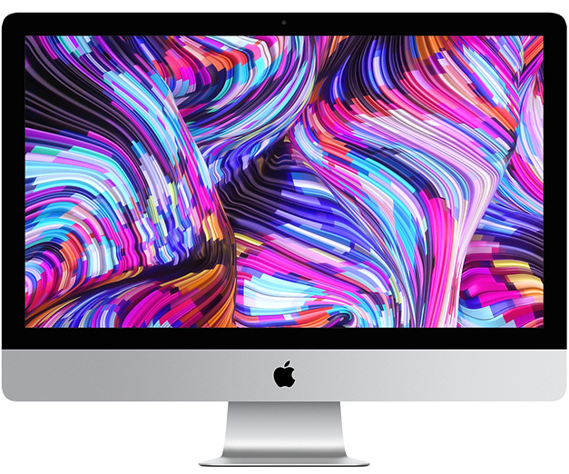

iMac Pro

Описание товара
iMac. Неотразимая мощь.
Характеристики товара
- Разрешение экрана: 5120x2880
- Процессор: Intel Core i5-8500, Intel Core i5-9600K
- Объем оперативной памяти: 8 ГБ, 16 ГБ, 32 ГБ, 64 ГБ
- Название видеокарты: AMD Radeon Pro 570X, AMD Radeon Pro 575, AMD Radeon Pro 575X, AMD Radeon Pro 580, AMD
Radeon Pro 580X, AMD Radeon Pro Vega 48
- Операционная система: MacOS
- Диагональ экрана 27 "
- Разрешение экрана 5120x2880
- Дискретная видеокарта
- Bluetooth
- Wi-Fi
Подробное описание товара
iMac объединяет в своём тонком корпусе самые продвинутые и одновременно простые в использовании
технологии. Новый iMac идёт на очередной рекорд и расширяет границы возможного. Более быстрые процессоры
и память, потрясающая графика и дисплей Retina с самым ярким и реалистичным изображением в истории Mac.
iMac стал мощнее — во всех отношениях.